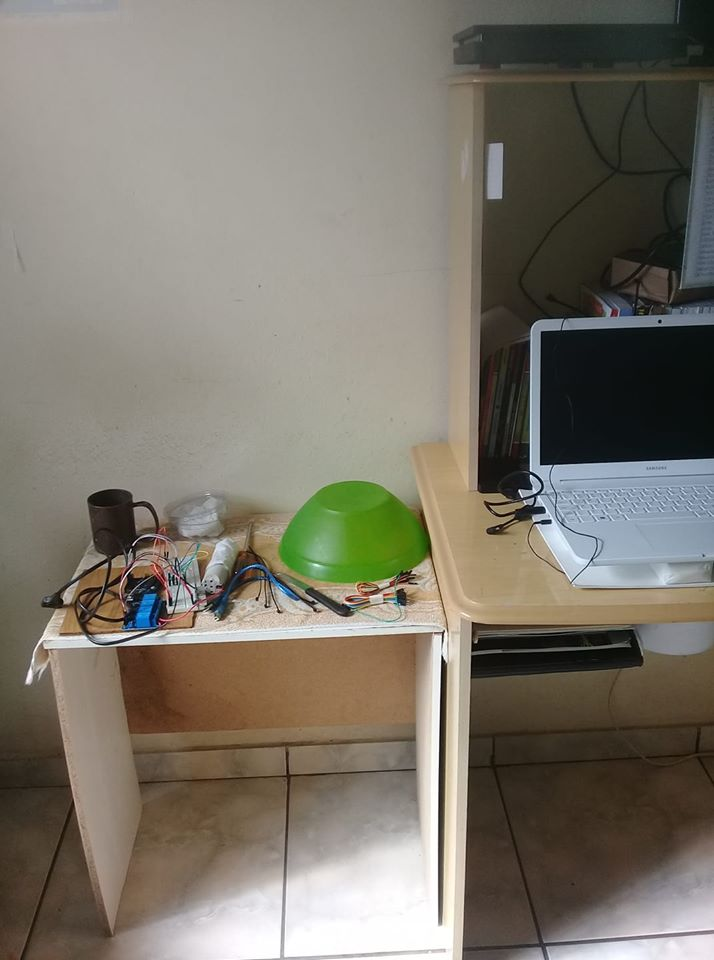
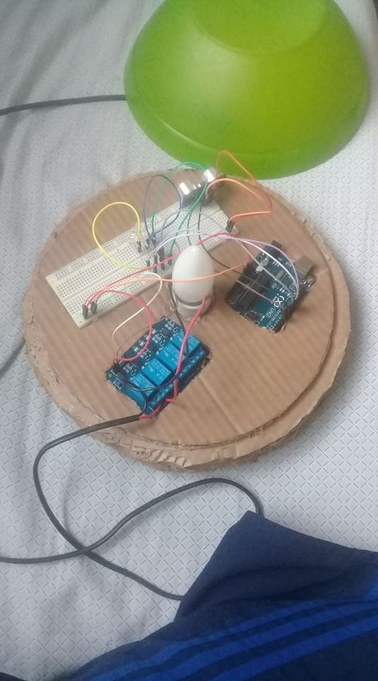

Web Page : Aluno Lucas De Oliveira Santos Projeto Arduino e Trabalho Final
Sejam Todos Bem Vindos !!!!!
Web Page para apresentar o desenvolvimento do curso "Arduino" e meu "Trabalho Final."
A seguir apresento o desenvolvimento do meu projeto com fotos e um video dos testes do projeto : "O
Grandioso Abajur."
"O Grandioso Abajur."
Produtor
Materiais utilizado para desenvolver o projeto :
- Primeiro item da lista
1-Kit arduino uno
- Segundo item da lista
1-Sensor ultrasonico modelo : hc-sr04
- item de lista
Resistores
- Outro item de lista
Jumpers
- Item cinco da lista
1-lampada 127 Vts
- Item seis da lista
1-Bocal
- Item sete da lista
2-Metros de fio
- Item oito da lista
1-Rele 5 woltts
- Item nove da lista
1-Led pequena azul
- Item dez da lista
1-Led pequena vermelha
Foto ilustrativa do projeto
- Foto do projeto em desenvolvimento !

Foto ilustrativa do projeto
- Foto do projeto em testes finais e concluindo !

Video do projeto em fase de acabamento
- Video feito em sala de aula com a presenca do Professor Jeferson Instrutor do curso